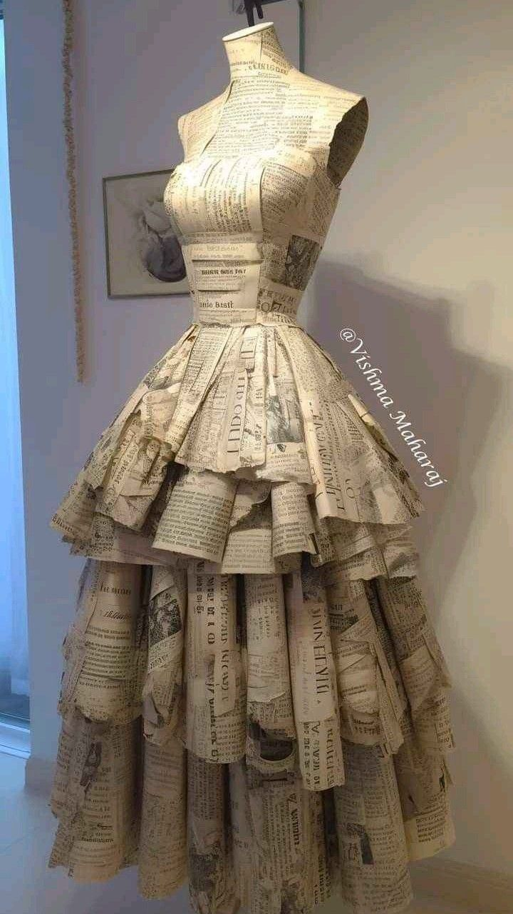

O processo de industrialização no Brasil se iniciou pela indústria têxtil, quando os nativos deixaram de adotar técnicas artesanais para confeccionar vestimentas com métodos europeus (Prado, 2019). A partir de 1990, a indústria da moda passou a adotar práticas sustentáveis, em razão da poluição ao meio ambiente, do desperdício de tecidos e das altas emissões de carbono, responsável por 1,2 bilhão de toneladas de gases de efeito estufa por ano (Ellen Macarthur Foundation [EMF], 2017).
O conceito de moda sustentável está internalizado na elaboração de coleções (Claxton & Kent, 2020) para se alinhar às premissas da sustentabilidade (Amritha & Suresh, 2020), prevendo a inclusão dos pressupostos da sustentabilidade no setor da moda (Fung, Choi, & Liu, 2020). Isso sugere fabricar produtos que adotem matéria-prima com elementos que não prejudiquem o meio ambiente em seu sistema de produção (Fifita, Seo, Ko, Conroy, & Hong, 2020) - por exemplo, o algodão orgânico, que não utiliza agrotóxicos (Galleli, Sutter, & Lennan, 2015). A moda sustentável procura gerar no cliente uma experiência de compra associada ao compromisso social e ambiental (Ertekin & Atik, 2020), unindo os pilares do consumo com a consciência e o compromisso com a sociedade (Lee, Choi, Han, Ko, & Kim, 2020).
Conforme dados da ONU Meio Ambiente, a indústria da moda é o segundo setor que mais consome água, produzindo 20% das águas residuais (Pena, 2019) e liberando 500 mil toneladas anual de microfibras sintéticas nos oceanos e 10% das emissões de gases estufa (Amaral et al., 2019). No Brasil os maiores produtores têxteis estão concentrados nas regiões Sudeste e Sul, sendo considerado o quarto maior produtor de malhas e o quinto entre as maiores indústrias têxteis do mundo (Associação Brasileira da Indústria Têxtil e de Confecção [Abit], 2018).
A expressão “moda sustentável” tem sido investigada por vários pesquisadores (Cardoso & Dantas, 2019), convertendo-se em objeto de interesse das esferas social, acadêmica e científica (Silva & Alliprandini, 2018). As instituições de ensino superior têm um papel relevante na preservação do meio ambiente e na qualidade de vida da comunidade (Lima, Silveira, & Beirão, 2018), dadas as características de suas atividades (Costa, 2012). A criação das Diretrizes Curriculares Nacionais para a Educação Ambiental (Resolução nº 2, de 15 de junho de 2012) e a política de ensino deram espaços para a educação sustentável, presente nos diversos níveis do processo educativo de caráter multidisciplinar (Lei nº 9.795, de 27 de abril de 1999), ou seja, o conteúdo pode ser diluído ao longo de toda a matriz curricular (Podlasek et al., 2018). A responsabilidade de utilizar artifícios refletindo no processo têxtil é dos designers de moda (Amaral et al., 2019).
Com base nesse enredo, o estudo tem o objetivo de analisar a forma pela qual os cursos de bacharelado em design de moda no Brasil estão inserindo premissas de sustentabilidade e economia circular na formação do aluno. A justificativa teórica está associada aos dizeres de Lipovetsky (2015), graças à alteração do comportamento do consumidor. Considerando o crescimento da indústria têxtil nas últimas décadas e a análise dos impactos ambientais, econômicos e sociais dentro da indústria (Koszewska, 2018), este estudo tem a finalidade de contribuir com a ciência para o mapeamento de estratégias, caminhos e alternativas utilizados pelos cursos de design de moda para a inserção das premissas de sustentabilidade e economia circular na formação do aluno.
A relevância social do estudo está associada ao ensejo de integrar as pessoas a um modelo educacional que motive as comunidades a se engajarem em moda sustentável, com a adesão de práticas como inclusão, preservação dos recursos naturais e melhoramentos econômicos (McNeill & Moore, 2015). Entende-se que o efeito é indireto, pois o ensino sensibiliza, conscientiza e mostra possibilidades. Dessa forma, cria-se o primeiro passo para uma sociedade eco-friendly, com replicação e disseminação de boas práticas de sustentabilidade no ensino (Henninger, Alevizou, & Oates, 2016). Considerando o comportamento proposto pela moda sustentável, é possível contribuir para a amenização dos danos da indústria têxtil ao planeta com a adoção de medidas como a escolha de tecidos naturais, por exemplo, que afetam minimamente o meio ambiente, conquistando os consumidores.
A justificativa prática para este estudo está associada à compreensão dos mecanismos que estreitam o relacionamento entre uma formação contemporânea, considerando as diretrizes internacionais - os Objetivos de Desenvolvimento do Milênio (D. S. S. Garcia & H. S. Garcia, 2016), promulgadas pela ONU -, procurando zelar pela perenidade do planeta (Salcedo, 2014) e buscando contribuir para a formação de valores, princípios e comportamentos sustentáveis (Loureiro, V. L. D. V. Pereira, & Pacheco, 2016). Este estudo está estruturado da seguinte forma. Além desta Introdução, a próxima seção apresenta aspectos teóricos alusivos à temática de moda sustentável e economia circular. Depois, apresenta-se o percurso metodológico percorrido pela pesquisa e discutem-se os resultados da pesquisa.